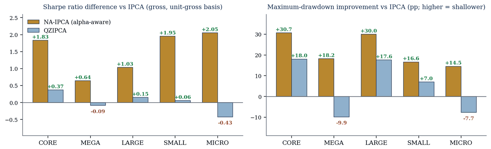
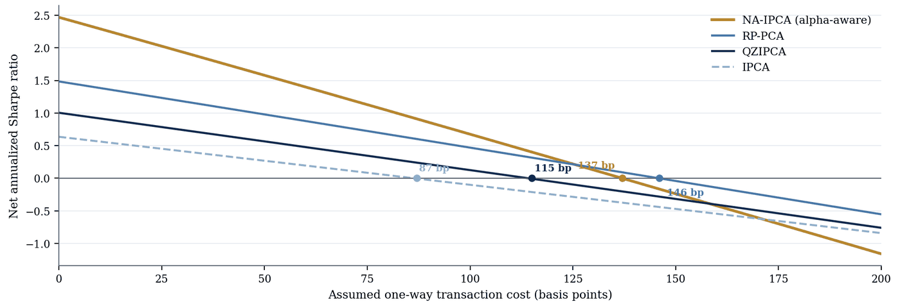

Strategy notes: stock-size universes and trading costs
Research note · source: institutional research brief Adaptive Characteristic Geometry in Systematic Equity Portfolios (10 July 2026) · All notes
Why it matters for practice
Two questions matter before any model reaches a book: does its advantage hold across stock-size universes, and how sensitive is it to trading costs? A research brief answers both descriptively on one rolling protocol: 618 months, June 1973 to November 2024, with positions scaled each month to a total size (long plus short) of one. IPCA (instrumented principal component analysis, a standard characteristic-based factor model) uses the plain ruler. QZ-IPCA changes only the ruler, to the characteristic ruler. NA-IPCA uses the characteristic ruler and adds the intercept (the part of expected return that no factor in the model explains), with a cap on how much it may carry.
Read with care. Returns are before trading costs unless stated, and the brief reports no confidence intervals. Its NA-IPCA rule uses the intercept without the risk adjustment for unstable intercept estimates; Characteristic Geometry reports a Sharpe ratio of 2.47 without and 2.49 with it on the same 618 months (p. 61). The characteristic library reflects today’s knowledge, so every backtest here carries some hindsight. The brief is a research communication, not a published paper or investment advice.
Exhibit 1: Where across universes the models differ

Key takeaway. NA-IPCA with its intercept has a higher Sharpe ratio than IPCA in all five universes, least among mega caps (+0.64). It changes the ruler and adds the intercept at once, so the gap is not the intercept’s value alone. QZ-IPCA, which changes only the ruler, is ahead in the broad Core universe (+0.37) and behind among mega and micro caps (−0.09 and −0.43). In Characteristic Geometry’s same-fit comparison, the intercept’s mean-return gain is statistically clear in all four universes over 1975–2024 but in none since October 2007 (Table VI, p. 33). The drawdown panel compares books of equal size, not equal risk: in Core, NA-IPCA runs at 3.1% annual volatility against 6.1% for IPCA (brief, Table 1, p. 2), so part of its shallower drawdown is lower risk.
Exhibit 2: Cost thresholds under a turnover proxy

Key takeaway. Under the proxy, the average return falls to zero at a one-way charge of 87 bp (basis points; 1 bp = 0.01 percentage point) for IPCA, 115 for QZ-IPCA, 137 for NA-IPCA with the intercept and 146 for RP-PCA. The intercept rule trades more, so above roughly 130 bp RP-PCA has the highest Sharpe ratio after the proxy cost. These are sensitivity thresholds, not implementable break-even costs: on its 594-month sample, Characteristic Geometry reports about 136 bp for the complete rule and 142 for RP-PCA, and keeps the calculation only as a sensitivity check until holdings-based costs, borrowing fees and capacity are measured (p. 21; Figure IA.2, p. 54).
Where the papers take this
- Characteristic Geometry: the intercept’s value within one fitted model, with paired inference and the post-2007 evidence.
- Interpreting Pricing Errors: what an alpha does and does not mean.